CRVI001361Andrew Kuo - Charting 'Thank You for Letting Me Be Myself' by Omar S
Chart for The New York Times · 2013-06-25 · 2013
Chart for The New York Times · 2013-06-25 · 2013

CRVI002212Piet Mondrian - Lozenge Composition with Red, Gray, Blue, Yellow and Black
1925
1925

CRVI000389SND - Stdio
Designer unknown · Mille Plateaux · 2000
Designer unknown · Mille Plateaux · 2000

CRVI001901Unidentified - Blue shaped panel

CRVI002429Unattributed - We Live In Time Kitchen Timer
2024
2024

CRVI001366Kenny Burrell - Kenny Burrell
Cover drawing by Andy Warhol · Blue Note 1543 · 1957
Cover drawing by Andy Warhol · Blue Note 1543 · 1957

CRVI000531Unknown - The Lunacy of Text-Based Therapy
New York, March 29-April 11, 2021 · 2021
New York, March 29-April 11, 2021 · 2021

CRVI000400C+C Music Factory - Gonna Make You Sweat
Designer unknown · CBS · 1990
Designer unknown · CBS · 1990

CRVI000047Various - Hohokum Soundtrack
Designed by Richard Hogg · Ghostly International · 2014
Designed by Richard Hogg · Ghostly International · 2014

CRVI000284David Olère - Pour l'Amour du Ciel! (For Heaven's Sake)
Press book illustration · Paramount, Paris
Press book illustration · Paramount, Paris

CRVI000144Bud Shank Quartet - Jazz at Cal-Tech
Designed by William Claxton · Pacific Jazz 1219 · 1956
Designed by William Claxton · Pacific Jazz 1219 · 1956

CRVI000246Keiji Usami - Louisiana exhibition poster
Exhibition poster · Louisiana Museum of Modern Art
Exhibition poster · Louisiana Museum of Modern Art

CRVI001171Serge Chaloff - Blue Serge
Designer unrecorded · Capitol Records T 742 · 1956
Designer unrecorded · Capitol Records T 742 · 1956

CRVI000799Joseph Beuys - Ein Vergleich zweier Gesellschaftsformen
Polythene carrier bag with felt · art intermedia Edition · 10,000 copies · 1971
Polythene carrier bag with felt · art intermedia Edition · 10,000 copies · 1971

CRVI001747Bart van der Leck - Composition

CRVI000014Bernard Bonnier - Casse‐tête
Designed by Eric Mattson · Amaryllis · 1984
Designed by Eric Mattson · Amaryllis · 1984

CRVI000305Yellow Magic Orchestra - BGM
Designer unknown · Alfa · 1981
Designer unknown · Alfa · 1981

CRVI002486Eddie Palmieri - Vámonos Pa'l Monte
1971
1971

CRVI002297Jeff Koons - One Ball Total Equilibrium Tank (Spalding Dr. J 241 Series)
1985
1985

CRVI000737Robert Beatty - Untitled
Album cover · artist and title unrecorded · Trendland plate 06
Album cover · artist and title unrecorded · Trendland plate 06

CRVI000384Mark Isham - Vapor Drawings
Designer unknown · Windham Hill · 1983
Designer unknown · Windham Hill · 1983

CRVI000403Idjut Boys - Cellar Door
Designer unknown · Smalltown Supersound · 2012
Designer unknown · Smalltown Supersound · 2012

CRVI000039Música Esporádica - Música Esporádica
Designed by Música Esporádica · Grabaciones Accidentales · 1985
Designed by Música Esporádica · Grabaciones Accidentales · 1985

CRVI002318Tauba Auerbach - Grain – Fret – Sublimation
2017
2017

CRVI001220Mati Klarwein - Untitled
Painting · plate P22-vol2-96 on the artist's own site
Painting · plate P22-vol2-96 on the artist's own site

CRVI000469Unknown - The U.S. Created PRISM. It Also Created the Antidote
Bloomberg Businessweek
Bloomberg Businessweek

CRVI001342unattributed - American Jazz Annual, Newport edition
Maker unidentified · 1956
Maker unidentified · 1956

CRVI000271Robert Czerniawski - Lulu on the Bridge
Theatre Poster · 2008 · 2008
Theatre Poster · 2008 · 2008

CRVI000571Chris Ware - Ups and Downs
The New Yorker, December 26, 2022 · 2022
The New Yorker, December 26, 2022 · 2022

CRVI000606Unknown - Manners for the '80s
New York, December 14, 1987 · 1987
New York, December 14, 1987 · 1987

CRVI000328Stevie Wonder - Signed, Sealed & Delivered I'm Yours
Designer unknown · Motown · 1970
Designer unknown · Motown · 1970

CRVI000785Angelo Testa and Paul Rand - IBM (Furnishing fabric)
Linen · 304.8 × 132.1 cm · late 1950s
Linen · 304.8 × 132.1 cm · late 1950s

CRVI001865Donald Judd - Untitled
1966
1966

CRVI002471Willie Colón and Rubén Blades - Siembra
1978
1978

CRVI001971Lorna Simpson - Collage with ink-wash hair
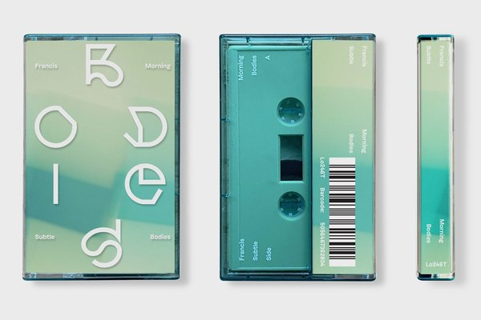
CRVI002438Non-Format - Francis Morning — Subtle Bodies
2024
2024

CRVI002394Pete Rodríguez - I Like It Like That (A Mi Me Gusta Así)
1967
1967

CRVI002141Mike Kelley - Untitled

CRVI000607Unknown - Spying on Spy
New York, April 17, 1989 · 1989
New York, April 17, 1989 · 1989

CRVI000677Tom Alberty, Eva O'Leary - What Instagram Did to Me
New York, September 16-29, 2019 · 2019
New York, September 16-29, 2019 · 2019
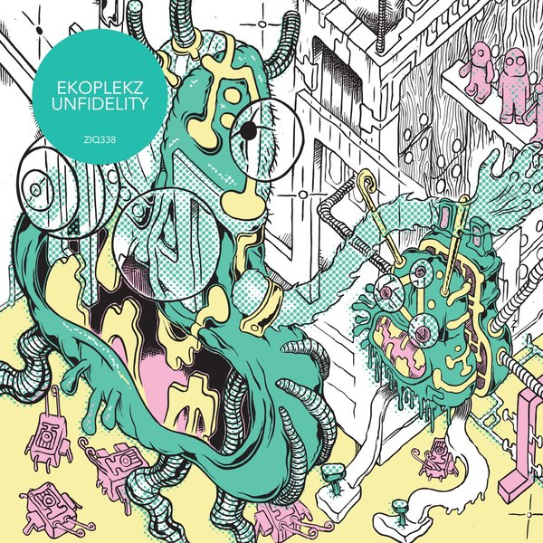
CRVI002445Ekoplekz - Unfidelity
2014
2014

CRVI000231Reminiscence Quartet - Psycodelico
Designer unknown · Yellow Productions · 1995
Designer unknown · Yellow Productions · 1995
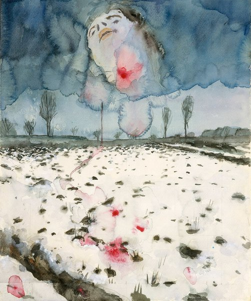
CRVI001926Anselm Kiefer - Winter Landscape
1970
1970

CRVI000287Herbert Bayer - Bauhaus Exhibition Poster
Poster
Poster
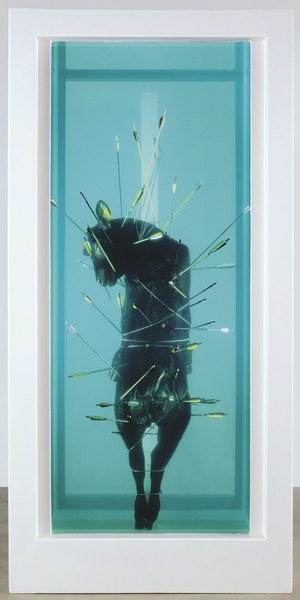
CRVI002284Damien Hirst - Saint Sebastian, Exquisite Pain
2007
2007
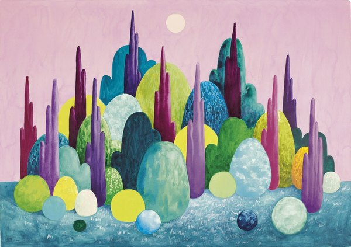
CRVI002056Nicolas Party - Untitled

CRVI002140Matthew Barney - Untitled

CRVI000254Jerzy Flisak - The Audience
Film Poster Designed By Jerzy Flisak · 1973 · 1973
Film Poster Designed By Jerzy Flisak · 1973 · 1973
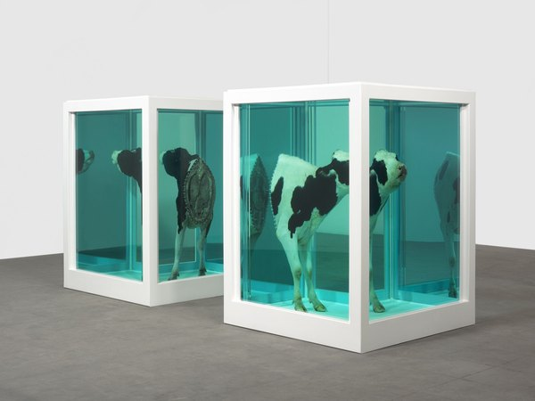
CRVI002286Damien Hirst - Mother and Child (Divided)
1993
1993

CRVI001859Nam June Paik - Magnet TV
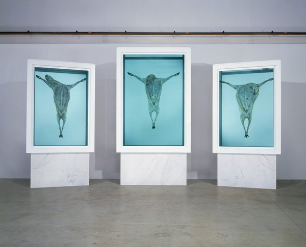
CRVI001934Damien Hirst - God Alone Knows
2007
2007

CRVI000182Albert Collins - The Cool Sound of Albert Collins
Designer unknown
Designer unknown

CRVI000620Beth Broadwater, Juco - Wake Up and Dream
The Washington Post Magazine, April 29 2018 · 2018
The Washington Post Magazine, April 29 2018 · 2018
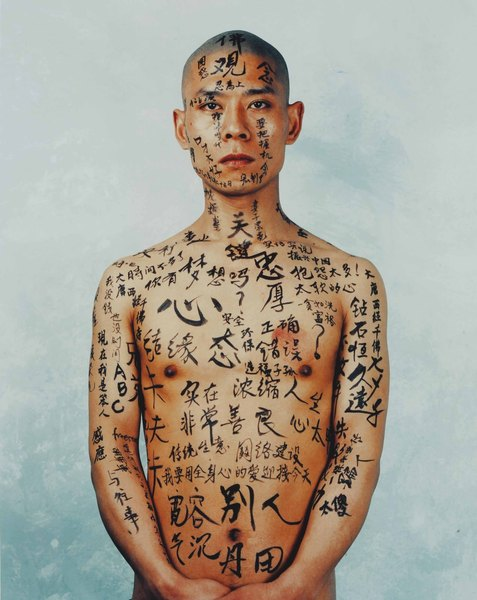
CRVI002181Zhang Huan - 1/2

CRVI002157William Eggleston - Untitled (yellow building)

CRVI000276Andrzej Pągowski - Polish Film Ltd.
Film Poster · 1989 · 1989
Film Poster · 1989 · 1989

CRVI001551Yves Tanguy - Indefinite Divisibility
1942
1942

CRVI000121Tadanori Yokoo - Word & Image
The Museum of Modern Art, New York, January 24 – March 10 · 1968
The Museum of Modern Art, New York, January 24 – March 10 · 1968

CRVI000137Shigeo Fukuda - [Poster: ring of figures on dark red]
Title not established
Title not established

CRVI000534D.W. Pine - Delete 'Facebook'?
TIME, October 25-November 1, 2021 · 2021
TIME, October 25-November 1, 2021 · 2021

CRVI000690Heavy J - Battle Royale
Hand-painted Ghanaian film poster
Hand-painted Ghanaian film poster

CRVI002022Bharti Kher - Untitled

CRVI000187E. McKnight Kauffer - Point Counter Point
Dust jacket for Aldous Huxley's Point Counter Point · The Modern Library, New York · 1942
Dust jacket for Aldous Huxley's Point Counter Point · The Modern Library, New York · 1942

CRVI001132Grant Green - Goin' West
Designer unrecorded · Blue Note BST 84310 · 1969
Designer unrecorded · Blue Note BST 84310 · 1969

CRVI000563Kadir Nelson - High Style
The New Yorker, February 14 and 21, 2022 · 2022
The New Yorker, February 14 and 21, 2022 · 2022

CRVI002054John Currin - The Neverending Story
1994
1994

CRVI002485Fania All-Stars - Lo Que Pide La Gente
1984
1984

CRVI000493Bill Mayer - When Pets Escape: The Great Goldfish Invasion
The New York Times for Kids, January 28, 2024 · 2024
The New York Times for Kids, January 28, 2024 · 2024

CRVI000564Thandiwe Muriu - Global Cool
Virtuoso, September/October 2022 · 2022
Virtuoso, September/October 2022 · 2022

CRVI002050John Currin - Untitled
1992
1992

CRVI000272Meridian Brothers - Desesperanza
Designer unknown · Soundway · 2012
Designer unknown · Soundway · 2012

CRVI000692Stoger - Air Bud
Hand-painted Ghanaian film poster
Hand-painted Ghanaian film poster

CRVI000673Rob Vargas, Alicia Tatone, Micaiah Carter - The New Masculinity Issue
GQ, November 2019 · 2019
GQ, November 2019 · 2019

CRVI001409Peter Max - The American Cosmic Jumper in the Land of Rainbows and Stars
Peter Max · 1976 · billboard for the GSA Art-in-Architecture Program · 1976
Peter Max · 1976 · billboard for the GSA Art-in-Architecture Program · 1976
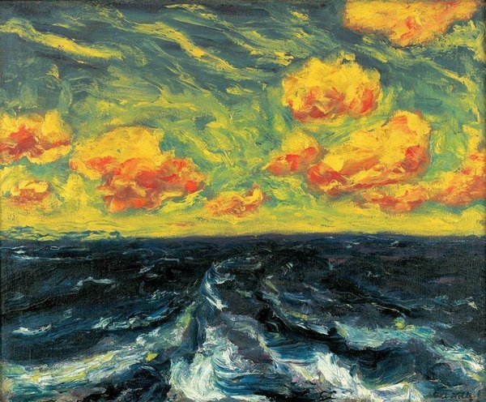
CRVI002389Emil Nolde - Sea under yellow clouds

CRVI001753Unidentified - The Bauhaus building, Dessau

CRVI001594Tom Blackwell - Rainbow '74

CRVI001331Barney Bubbles - Don't Join!
Designed by Barney Bubbles
Designed by Barney Bubbles

CRVI001942Unidentified - Neon Rhythm

CRVI002406Peter Max - Right Now
1970
1970

CRVI002117Richard Diebenkorn - Ocean Park #45
1971
1971

CRVI000292Jan Sawka - Operetka (The Operetta)
Jan Sawka · Witold Gombrowicz, Teatr STU
Jan Sawka · Witold Gombrowicz, Teatr STU

CRVI000731Robert Beatty - Untitled
Illustration
Illustration

CRVI000416Alan Aldridge - Docken Dead
Cover for John Trench · Penguin Crime
Cover for John Trench · Penguin Crime

CRVI001179Wayne Shorter - Schizophrenia
Photograph by John Zoiner · Blue Note BST 84297 · 1969
Photograph by John Zoiner · Blue Note BST 84297 · 1969

CRVI000496Chris Nosenzo - Is Google Hurting Small Business?
Bloomberg Businessweek, August 10, 2020 · 2020
Bloomberg Businessweek, August 10, 2020 · 2020
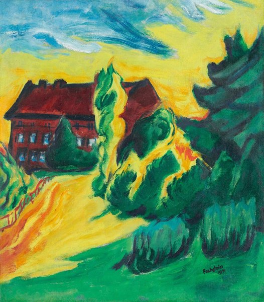
CRVI001640Max Pechstein - The Red House
1911
1911

CRVI001261Elvin Jones - Midnight Walk
Designed by Marvin Israel, photograph by Lee Tanner · Atlantic 1485 · 1967
Designed by Marvin Israel, photograph by Lee Tanner · Atlantic 1485 · 1967

CRVI001790Barnett Newman - Dionysius
1949
1949

CRVI001320Jutta Hipp - Jutta Hipp With Zoot Sims
Designed by Reid Miles · Blue Note 1530 · 1956
Designed by Reid Miles · Blue Note 1530 · 1956

CRVI000557Somnath Bhatt - The Baristas' Rebellion
Bloomberg Businessweek, May 16, 2022 · 2022
Bloomberg Businessweek, May 16, 2022 · 2022

CRVI000597Unknown - Why Everybody's Talking About Gossip
New York, May 3, 1976 · 1976
New York, May 3, 1976 · 1976

CRVI000729Robert Beatty - Floodgate Companion
Spread · self-published
Spread · self-published

CRVI001315Miles Davis - Bags Groove
Designed by Reid Miles · Prestige 7109 · 1957
Designed by Reid Miles · Prestige 7109 · 1957

CRVI000806Mark Tansey - The Myth of Depth
Detail · oil on canvas, 99 × 226.1 cm · 1984
Detail · oil on canvas, 99 × 226.1 cm · 1984

CRVI000859Julian Stanczak - Conferring Blue
Screenprint · 68.6 × 68.6 cm · 1981
Screenprint · 68.6 × 68.6 cm · 1981

CRVI000008Boards Of Canada - Music Has The Right To Children
Designed by Boards Of Canada · Warp Records · 1998
Designed by Boards Of Canada · Warp Records · 1998

CRVI000302Pekka Airaksinen - Other Power
Designer unknown · Hormonia · 2012
Designer unknown · Hormonia · 2012

CRVI001980Amy Sherald - Breonna Taylor
2020
2020

CRVI000807Mark Tansey - Study for Action Painting II
Study · oil on canvas · 1985
Study · oil on canvas · 1985

CRVI000539Peter Herbert - Fortune 500
Fortune, June/July 2021 · 2021
Fortune, June/July 2021 · 2021

CRVI001759Josef Albers - Homage to the Square: Apparition
1959
1959

CRVI000742George Greaves - Untitled
Illustration
Illustration

CRVI001277George Wallington And His Band - George Wallington Showcase
Designed by John Hermansader, photograph by Francis Wolff · Blue Note 5045 · 1954
Designed by John Hermansader, photograph by Francis Wolff · Blue Note 5045 · 1954

CRVI002154Keith Haring - Untitled (Tree of figures)

CRVI000824Seymour Chwast - Master & Dog
Push Pin Graphic #57 · 1972
Push Pin Graphic #57 · 1972

CRVI002407Peter Max - Cosmic landscape with crystal peaks
2019
2019

CRVI000828Seymour Chwast - Penny Pitch
68.6 × 53.3 cm · 1967
68.6 × 53.3 cm · 1967

CRVI001049Takenobu Igarashi - EXPO '85 — The International Exposition, Tsukuba, Japan
Poster · The Museum of Modern Art, New York · 1985
Poster · The Museum of Modern Art, New York · 1985

CRVI002030Dana Schutz - Sneeze
2001
2001

CRVI002351René Magritte - The Therapist (Le thérapeute)

CRVI002264David Hockney - Portrait of an Artist (Pool with Two Figures)
1972
1972

CRVI002483Ray Barretto - Barretto Power
1970
1970

CRVI000238Troubleman - Time Out Of Mind
Designer unknown · Far Out Recordings · 2004
Designer unknown · Far Out Recordings · 2004

CRVI000129Koichi Sato - Soap Bubbles Floated, They Floated Into Outer Space
Produced by Human Design · Fuji Television
Produced by Human Design · Fuji Television

CRVI001086Kim Laughton - Untitled

CRVI002359Amy Sherald - Innocent You, Innocent Me
2016
2016

CRVI001176Tina Brooks - True Blue
Designed by Reid Miles, photograph by Francis Wolff · Blue Note BLP 4041 · 1960
Designed by Reid Miles, photograph by Francis Wolff · Blue Note BLP 4041 · 1960

CRVI001093Kim Laughton - Untitled

CRVI000003Thomas Fehlmann - Visions Of Blah
Designed by Bianca Strauch · Kompakt · 2002
Designed by Bianca Strauch · Kompakt · 2002

CRVI002363Amy Sherald - Precious jewels by the sea
2019
2019

CRVI001432Hirohito Fukutomi - ECM Special IV: New Music in Trumpet & Saxophone
Album cover · ECM PA-9603 · 1977
Album cover · ECM PA-9603 · 1977

CRVI002357Amy Sherald - If You Surrendered to the Air, You Could Ride It
2019
2019

CRVI002052John Currin - The Shaving Man
1993
1993

CRVI000779Folio - Folio 5: CIBA-U.S.A.
Sanders Printing Corporation, New York · c. 1960–65
Sanders Printing Corporation, New York · c. 1960–65

CRVI002358Amy Sherald - The Bathers
2015
2015

CRVI001475Paul Cézanne - The Pigeon Tower at Bellevue
1890
1890

CRVI000566Graeme James - The Coming Food Catastrophe
The Economist, May 21-27, 2022 · 2022
The Economist, May 21-27, 2022 · 2022

CRVI000262Jakub Kamiński - Wniebowzieci
Film Poster
Film Poster

CRVI001304Horace Parlan - Headin' South
Photograph by Ronnie Brathwaite · Blue Note 4062 · 1960
Photograph by Ronnie Brathwaite · Blue Note 4062 · 1960

CRVI000030Equiknoxx - Bird Sound Power
Designed by Jon Kraus · DDS · 2016
Designed by Jon Kraus · DDS · 2016

CRVI000857Julian Stanczak - Homage
Acrylic on canvas · 1990
Acrylic on canvas · 1990

CRVI000015FKA Twigs - LP 1
Designed by FKA Twigs, Phil Lee · Young Turks · 2014
Designed by FKA Twigs, Phil Lee · Young Turks · 2014

CRVI000805Mark Tansey - Reverb
Oil on canvas · 213.4 × 152.4 cm · 2017
Oil on canvas · 213.4 × 152.4 cm · 2017

CRVI001215Alice Coltrane With Strings - World Galaxy
Designed by Peter Max, photograph by Philip Melnick · Impulse! AS-9218 · 1972
Designed by Peter Max, photograph by Philip Melnick · Impulse! AS-9218 · 1972

CRVI002498Koichi Sato - グラフィックデザイナー 佐藤晃一展 (Graphic Designer Koichi Sato)
2017
2017

CRVI001846Unidentified - Red lines on blue

CRVI001155John Coltrane - Infinity
Designed by Richard Taylor, photograph by Chester Sheard · Impulse! AS-9225 · 1972
Designed by Richard Taylor, photograph by Chester Sheard · Impulse! AS-9225 · 1972

CRVI001301Bobbie Gentry - Touch 'Em With Love
Designer unrecorded · Capitol ST-234 · 1969
Designer unrecorded · Capitol ST-234 · 1969

CRVI001932Francesco Clemente - Hand with a map

CRVI001134Grant Green - Street Of Dreams
Designed by Reid Miles, photograph by Jim Marshall · Blue Note BST 84253 · 1967
Designed by Reid Miles, photograph by Jim Marshall · Blue Note BST 84253 · 1967

CRVI000352Earth, Wind & Fire - AIl 'N' AIl
Designer unknown · Columbia · 1977
Designer unknown · Columbia · 1977

CRVI002082Hito Steyerl - Liquidity Inc.
2014
2014

CRVI001369Miles Davis - Blue Haze
Designed by Tom Hannan · Prestige 7054 · 1956
Designed by Tom Hannan · Prestige 7054 · 1956

CRVI002360Amy Sherald - Miss Everything (Unsuppressed Deliverance)
2013
2013

CRVI001178Wayne Shorter - JuJu
Designed by Reid Miles · Blue Note BLP 4182 · 1965
Designed by Reid Miles · Blue Note BLP 4182 · 1965

CRVI001197Mati Klarwein - Alexander's Dream
Painting
Painting

CRVI000489R. Kikuo Johnson - The Robots Are Coming
MIT Technology Review, May/June 2024 · 2024
MIT Technology Review, May/June 2024 · 2024

CRVI000325Lone - Ecstasy & Friends
Designer unknown · Werk Discs · 2009
Designer unknown · Werk Discs · 2009

CRVI002174Kim Whanki - 25-V-70 #173
1970
1970

CRVI001563Otto Dix - Self-Portrait
1912
1912

CRVI001141Jackie McLean - Bluesnik
Designed by Reid Miles, photograph by Francis Wolff · Blue Note BLP 4067 · 1962
Designed by Reid Miles, photograph by Francis Wolff · Blue Note BLP 4067 · 1962

CRVI001645Cuno Amiet - Blumengarten
1936
1936

CRVI001760Josef Albers - Study for Homage to the Square: Beaming
1963
1963

CRVI002143Richard Prince - Untitled (Cowboy)
1989
1989

CRVI001159Kenny Burrell - Blue Lights, Volumes 1 & 2
Designed by Reid Miles, artwork by Andy Warhol · Blue Note BLP 1596 · 1958
Designed by Reid Miles, artwork by Andy Warhol · Blue Note BLP 1596 · 1958

CRVI000435Sufjan Stevens - Illinois
Designer unknown · Asthmatic Kitty · 2005
Designer unknown · Asthmatic Kitty · 2005

CRVI000178Sonny Rollins - Sonny Rollins
Designed by Bob Weinstock · Prestige LP 7029 · 1953
Designed by Bob Weinstock · Prestige LP 7029 · 1953

CRVI000626Anton Ioukhnovets, Mario Sorrenti - Make America Happy Again
Esquire, February 2017 · 2017
Esquire, February 2017 · 2017

CRVI002346René Magritte - Voice of Space (La voix des airs)
1931
1931

CRVI001059Ingo Swann - Cosmic painting

CRVI000809Mark Tansey - Xing
Oil on canvas · 223.5 × 152.4 cm · 2021
Oil on canvas · 223.5 × 152.4 cm · 2021

CRVI000230Me&You - Floating Heavy
Designer unknown · Tru Thoughts · 2007
Designer unknown · Tru Thoughts · 2007

CRVI001587Richard Estes - Car with reflected buildings

CRVI002210Piet Mondrian - Avond (Evening): The Red Tree
1910
1910

CRVI000013Giant Claw - Dark Web
Artwork by Ellen Thomas, Keith Rankin · 2014
Artwork by Ellen Thomas, Keith Rankin · 2014

CRVI000598Unknown - We Have Seen the Future and It's New Jersey
New York, June 20, 1977 · 1977
New York, June 20, 1977 · 1977

CRVI000669Unknown - Hong Kong's Countdown to 2047
Bloomberg Businessweek, August 19, 2019 · 2019
Bloomberg Businessweek, August 19, 2019 · 2019
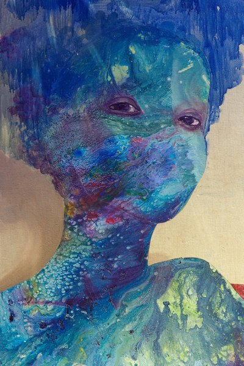
CRVI001996Firelei Báez - Untitled
2019
2019

CRVI001826Victor Vasarely - Pal-Ket
1974
1974

CRVI000124Ikko Tanaka - Nihon Buyo
UCLA Asian Performing Arts Institute · Los Angeles, Washington D.C., New York · 1981
UCLA Asian Performing Arts Institute · Los Angeles, Washington D.C., New York · 1981

CRVI000463Richard Turley - The Underground Solution
Bloomberg Businessweek, 7 November 2011 · 2011
Bloomberg Businessweek, 7 November 2011 · 2011

CRVI000153Wynton Kelly - It's All Right!
Designed by Michael J. Malatak · 1964
Designed by Michael J. Malatak · 1964

CRVI000631Unknown - What Lies Ahead
WIRED, February 2017 Most Controversial · 2017
WIRED, February 2017 Most Controversial · 2017
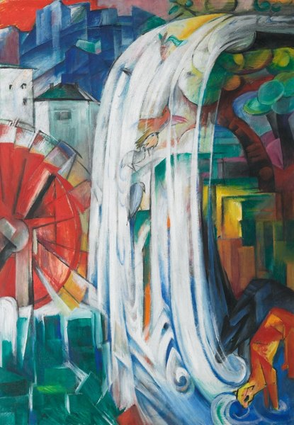
CRVI001705Franz Marc - The Bewitched Mill
1913
1913

CRVI001603John William Waterhouse - Circe Invidiosa
1892
1892

CRVI000422Trick Daddy - www.thug.com
Designer unknown · Slip-N-Slide · 1998
Designer unknown · Slip-N-Slide · 1998

CRVI001202Mati Klarwein - Untitled
Painting · plate R16-vol3-56 on the artist's own site
Painting · plate R16-vol3-56 on the artist's own site

CRVI002195Pablo Picasso - The Barefoot Girl
1895
1895

CRVI001200The Last Poets - Holy Terror
Painting by Mati Klarwein · Rykodisc RCD 10319 · 1993
Painting by Mati Klarwein · Rykodisc RCD 10319 · 1993

CRVI001224Mati Klarwein - Untitled
Painting · plate P06B-vol2-51 on the artist's own site
Painting · plate P06B-vol2-51 on the artist's own site

CRVI001473Winslow Homer - The Brierwood Pipe
1864
1864

CRVI000753Tetsuya Ishida - Refuel Meal
1996 · 1996
1996 · 1996

CRVI001022Gustave Courbet - Le Fou de peur (The Man Mad with Fear)
Oil on paper mounted on canvas, 60.5 × 50.5 cm · Nasjonalmuseet, Oslo · c. 1844–1845
Oil on paper mounted on canvas, 60.5 × 50.5 cm · Nasjonalmuseet, Oslo · c. 1844–1845

CRVI000364The Miracles - City of Angels
Designer unknown · Tamla · 1975
Designer unknown · Tamla · 1975
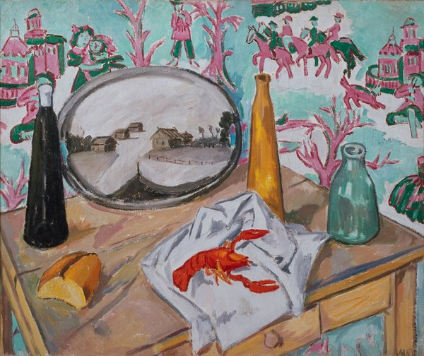
CRVI001732Mikhail Larionov - Still Life with Lobster
1907
1907

CRVI001151Jimmy Smith - Stay Loose... Jimmy Smith Sings Again
Photograph by Howell Conant · Verve Records V6-8745 · 1968
Photograph by Howell Conant · Verve Records V6-8745 · 1968

CRVI001398Giorgio de Chirico - The Disquieting Muses
Giorgio de Chirico · 1918 · 1918
Giorgio de Chirico · 1918 · 1918

CRVI001620Georges Lacombe - The Green Wave (Vorhor)
1896
1896
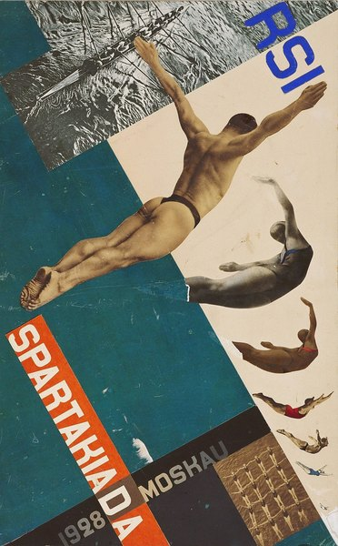
CRVI001502Gustav Klutsis - Spartakiada Moskau 1928
Postcard · 1928
Postcard · 1928

CRVI002472Willie Colón - Cosa Nuestra
1969
1969

CRVI001394Giorgio de Chirico - The Seer
Giorgio de Chirico · 1914 · 1914
Giorgio de Chirico · 1914 · 1914

CRVI000662Unknown - The New Yorker, May 11, 2009
The New Yorker, May 11, 2009 · 2009
The New Yorker, May 11, 2009 · 2009
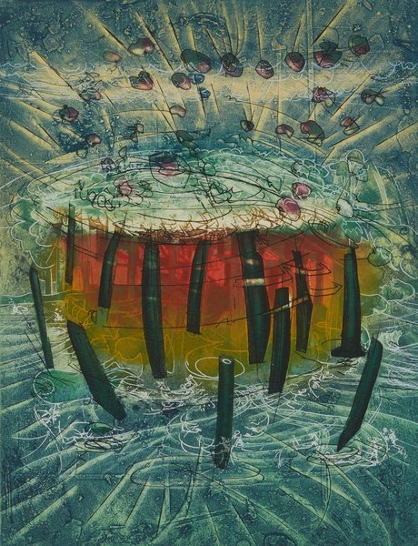
CRVI002456Roberto Matta - Figures around a lit basin
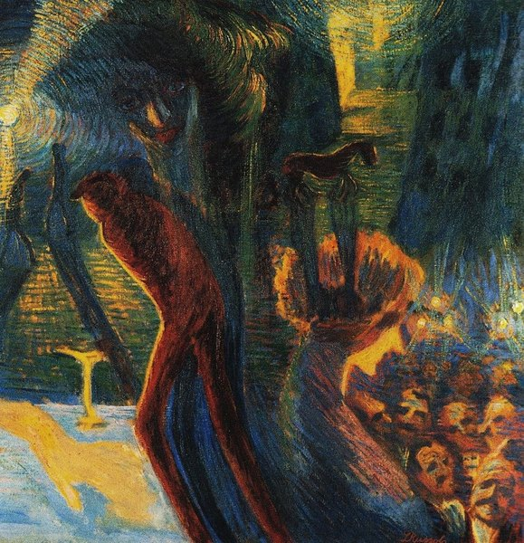
CRVI001692Luigi Russolo - Souvenir d'une nuit (Memories of a Night)
1911
1911

CRVI000411EPMD - Strictly Business
Designer unknown · Fresh · 1988
Designer unknown · Fresh · 1988

CRVI001395Giorgio de Chirico - The Red Tower
Giorgio de Chirico · 1913 · 1913
Giorgio de Chirico · 1913 · 1913

CRVI000009The Future Sound Of London - Lifeforms
Artwork by Buggy G. Riphead · Virgin · 1994
Artwork by Buggy G. Riphead · Virgin · 1994
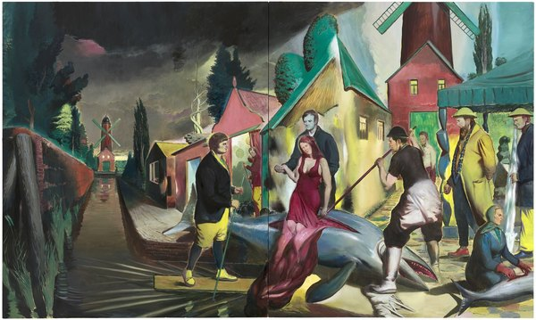
CRVI002337Neo Rauch - Der blaue Fisch

CRVI000641R. Kikuo Johnson - Commencement
The New Yorker, May 30 2016 · 2016
The New Yorker, May 30 2016 · 2016

CRVI000265Roman Cieślewicz - Theater Wspolczesny in Wroclaw Invites
Theatre Poster · 1975 · 1975
Theatre Poster · 1975 · 1975

CRVI001727František Kupka - Babylon
1906
1906

CRVI001296Red Garland - All Kinds Of Weather
Designer unrecorded · Prestige 7148 · 1959
Designer unrecorded · Prestige 7148 · 1959
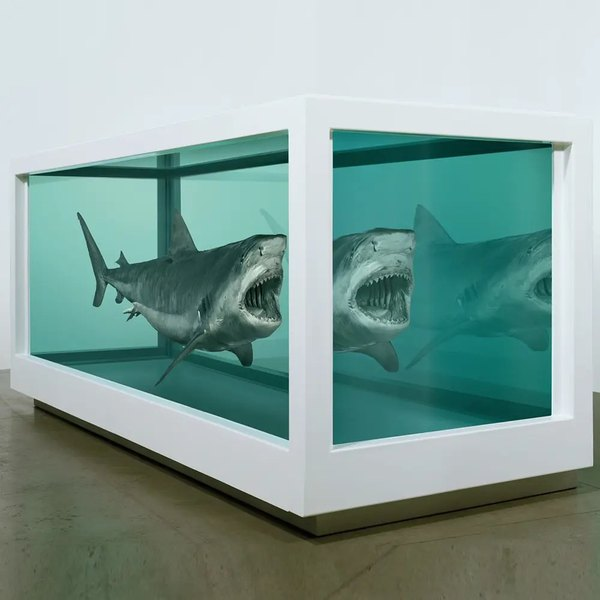
CRVI002285Damien Hirst - The Physical Impossibility of Death in the Mind of Someone Living
1991
1991

CRVI001182unattributed - Statue of Liberty with Bloomingdale's shopping bags
Designer unrecorded
Designer unrecorded
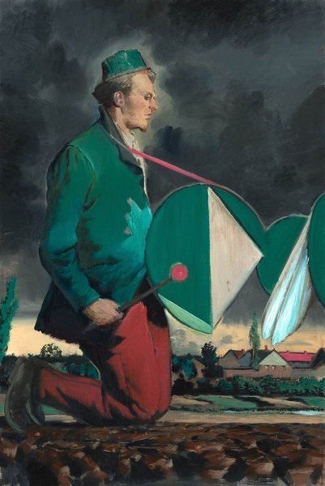
CRVI002309Neo Rauch - Gewitterfront
2016
2016

CRVI000878Maurice Denis - Annonciation d’Assise
Huile sur carton · 54,5 × 72 cm · 1914
Huile sur carton · 54,5 × 72 cm · 1914

CRVI000808Mark Tansey - Nature’s Ape
Oil on canvas · 195.6 × 167.6 cm · 1984
Oil on canvas · 195.6 × 167.6 cm · 1984

CRVI000506Justin Patrick Long - The Great Fire
Vanity Fair, September 2020 · 2020
Vanity Fair, September 2020 · 2020
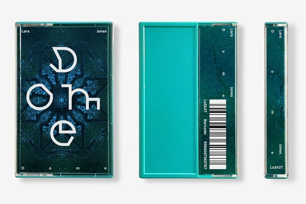
CRVI002437Non-Format - Lara Jones — Dome
2024
2024

CRVI001542Palmer Hayden - Sleeping figure with floating instruments

CRVI000334Chairmen of the Board - Give Me Just A Little More Time
Designer unknown · Invictus · 1970
Designer unknown · Invictus · 1970

CRVI001153John Coltrane - Blue Train
Designed by Reid Miles, photograph by Francis Wolff · Blue Note BLP 1577 · 1958
Designed by Reid Miles, photograph by Francis Wolff · Blue Note BLP 1577 · 1958

CRVI001839Carlos Cruz-Diez - Chromointerférence

CRVI000381Joel Vandroogenbroeck, Mac Prindy & Marc Monsen - Biomechanoid
Designer unknown · Sofoursound Library · 1980
Designer unknown · Sofoursound Library · 1980

CRVI001280Teddy Charles, Idrees Sulieman, John Jenkins, Mal Waldron - Coolin'
Designed by Esmond Edwards · New Jazz 8216 · 1959
Designed by Esmond Edwards · New Jazz 8216 · 1959

CRVI000658Unknown - Jerry Seinfeld Is 58, Rich Beyond Imagination and Still Working
The New York Times Magazine, December 23, 2012 · 2012
The New York Times Magazine, December 23, 2012 · 2012

CRVI000295Parliament - Mothership Connection
Designer unknown · Casablanca · 1975
Designer unknown · Casablanca · 1975
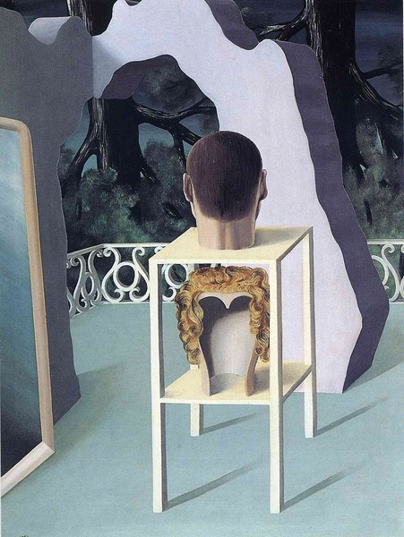
CRVI002187René Magritte - Midnight Marriage
1926
1926
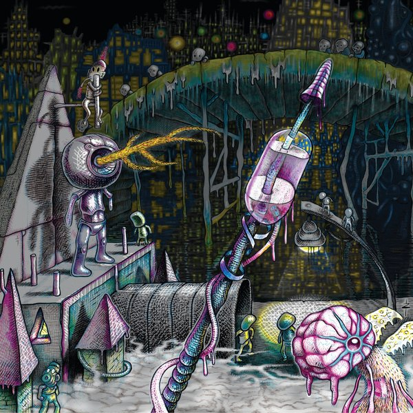
CRVI002439The Aetherius Appreciation Society Presents The Silent Group - Accelerated Evolution Music
2020
2020

CRVI002278Frank Stella - Untitled

CRVI002081Camille Henrot - Installation view
2025
2025

CRVI002397Héctor Lavoe - Revento
1985
1985

CRVI000114Yusaku Kamekura - Tokyo 1964 — Butterfly Swimmer
Official poster, Games of the XVIII Olympiad · photograph Osamu Hayasaki · photo direction Jo Murakoshi · 1964
Official poster, Games of the XVIII Olympiad · photograph Osamu Hayasaki · photo direction Jo Murakoshi · 1964

CRVI000468Unknown - The Year Ahead: 2015
Bloomberg Businessweek, November 10, 2014 – January 6, 2015 · 2014
Bloomberg Businessweek, November 10, 2014 – January 6, 2015 · 2014

CRVI000562Cian Browne - Zendaya
W · 2022
W · 2022

CRVI001499Gustav Klutsis - Postcard Commemorating the Russian All-Union Spartakiada
1928
1928

CRVI002326Ed Ruscha - The End
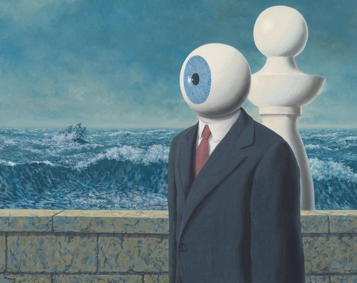
CRVI002355Unidentified - Man in a suit with an eye for a head

CRVI000218Yayoi Kusama - Kusama painting, Tokyo
Photograph by Motohiko Hasui · at the media preview of the Yayoi Kusama Museum · 2017
Photograph by Motohiko Hasui · at the media preview of the Yayoi Kusama Museum · 2017

CRVI001299Blossom Dearie - Blossom Dearie
Photograph by Chuck Stewart · Verve Records MG V-2037 · 1957
Photograph by Chuck Stewart · Verve Records MG V-2037 · 1957
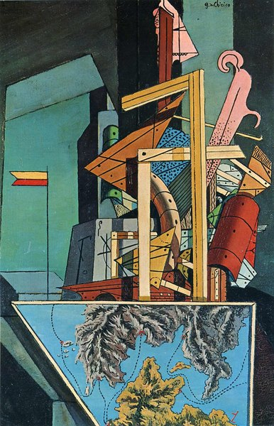
CRVI001561Giorgio de Chirico - Melancholy of Departure
1916
1916

CRVI000347Funkadelic - Standing On The Verge Of Getting It On
Designer unknown · Westbound · 1974
Designer unknown · Westbound · 1974

CRVI001648Pablo Picasso - The Old Guitarist
late 1903–early 1904
late 1903–early 1904
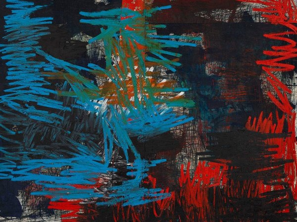
CRVI002069Unidentified - Gestural painting in blue and red

CRVI001067David Rudnick - Terrain (back)
Published by It's Nice That
Published by It's Nice That

CRVI001993Jordan Casteel - Woman on a fire escape
2020
2020

CRVI000172Sonny Rollins - Way Out West
Designer unknown · Contemporary S7530
Designer unknown · Contemporary S7530
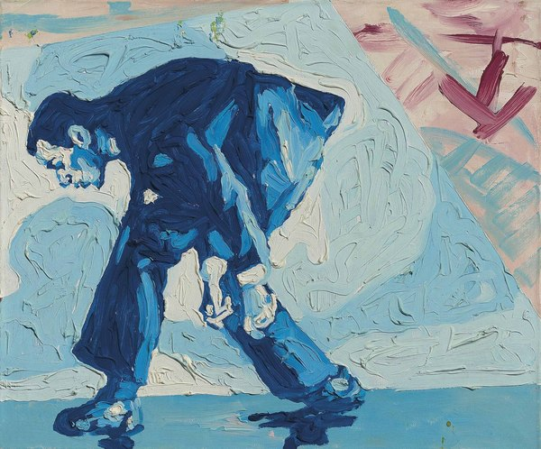
CRVI002108Martin Kippenberger - Untitled

CRVI001198Mati Klarwein - You're Next
Painting
Painting

CRVI000572Alvin Lustig - Monday Night
Kay Boyle · New Directions, New Classics NC20 · 1947
Kay Boyle · New Directions, New Classics NC20 · 1947

CRVI001586Richard Estes - Bus with Reflection of the Flatiron Building
1967
1967
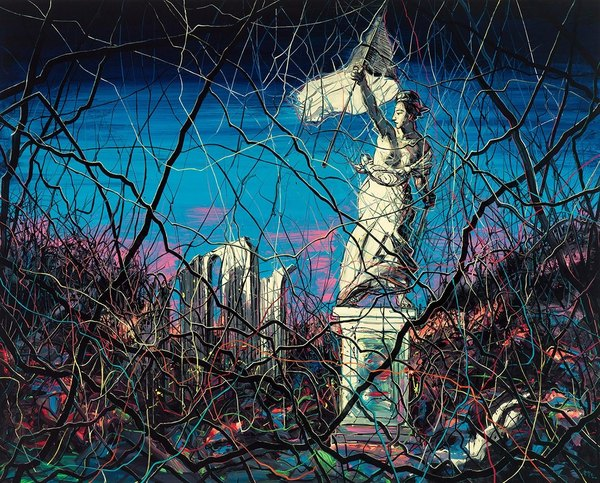
CRVI002018Zeng Fanzhi - Night landscape with the Statue of Liberty

CRVI001325unattributed - Tron — light cycles, film still
Photographer unidentified · 1982
Photographer unidentified · 1982

CRVI001322Peter Lloyd - The Crack in the Sky, by Richard A. Lupoff
Illustration by Peter Lloyd · Dell · 1976
Illustration by Peter Lloyd · Dell · 1976
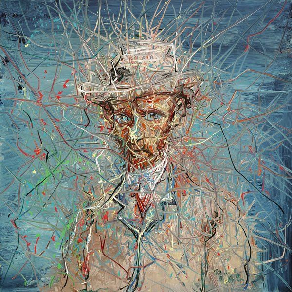
CRVI002017Zeng Fanzhi - Van Gogh IV
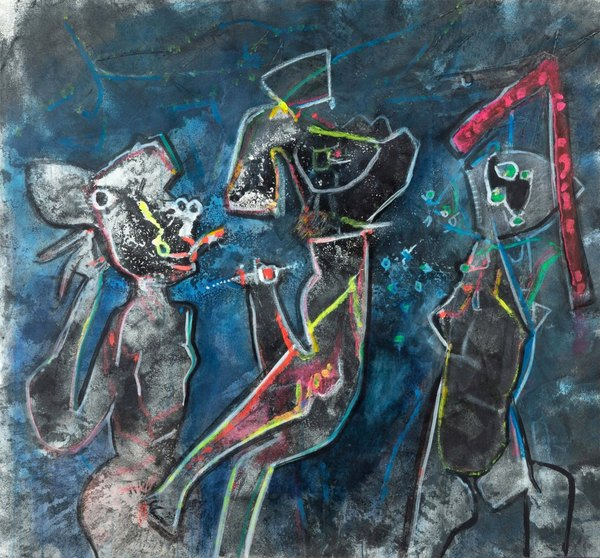
CRVI002459Roberto Matta - Blue ground with three grey figures
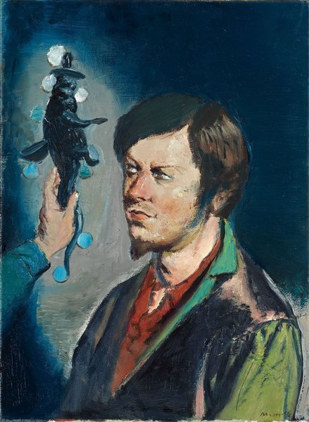
CRVI002334Neo Rauch - Framed portrait of a man with a small dark figure

CRVI000661Unknown - The New York Times Magazine, May 24, 2009
The New York Times Magazine, May 24, 2009 · 2009
The New York Times Magazine, May 24, 2009 · 2009
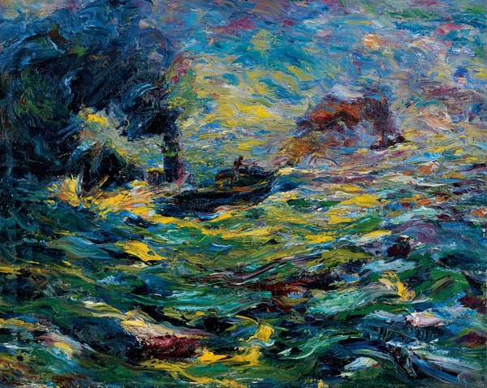
CRVI001639Emil Nolde - Sea with steamers
1910
1910
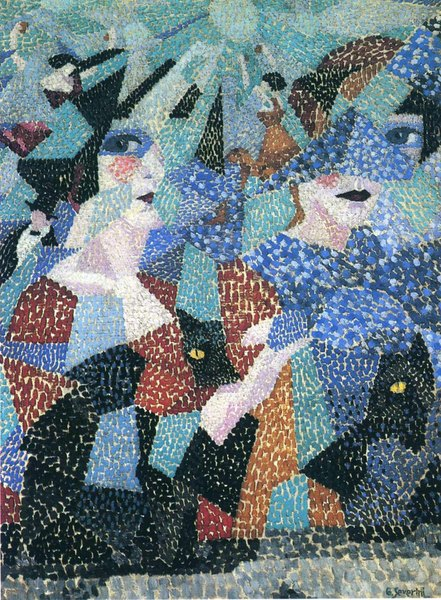
CRVI001686Gino Severini - The Haunting Dancer
1911
1911
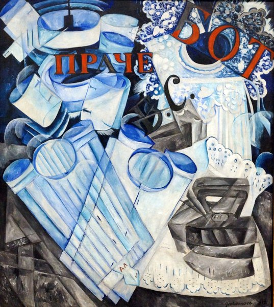
CRVI001734Natalia Goncharova - Linen
1913
1913

CRVI000192Unknown - Aviators
Reaction GIF · Tom Cruise putting on aviators · 55 frames, 2.2s loop
Reaction GIF · Tom Cruise putting on aviators · 55 frames, 2.2s loop

CRVI000812Mark Tansey - Repairing the Wheel
Oil on canvas · 1996
Oil on canvas · 1996

CRVI000243Jim Stoddart - Horse Under Water
Cover for Len Deighton · Penguin · 2021
Cover for Len Deighton · Penguin · 2021
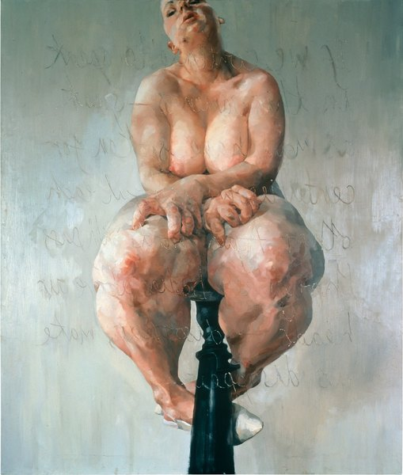
CRVI002044Jenny Saville - Propped
1992
1992

CRVI000616Chris Ware - Golden Opportunity
The New Yorker, March 5 2018 · 2018
The New Yorker, March 5 2018 · 2018
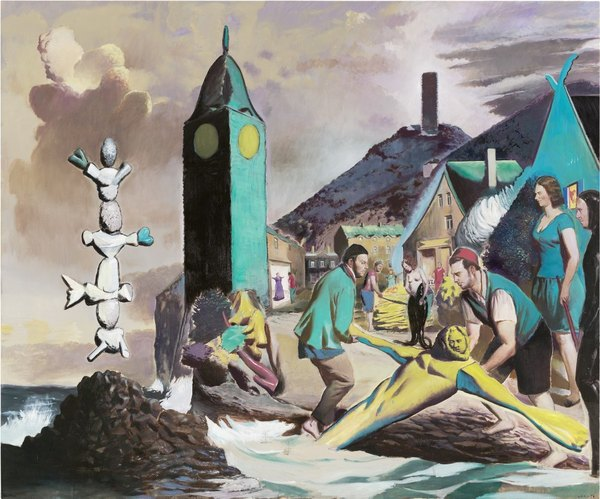
CRVI002313Neo Rauch - Marina
2014
2014

CRVI001911Michael Heizer - Rift #1
Jean Dry Lake, Nevada · 1968
Jean Dry Lake, Nevada · 1968

CRVI001032Adrian Ghenie - Untitled painting
Published in Flaunt
Published in Flaunt
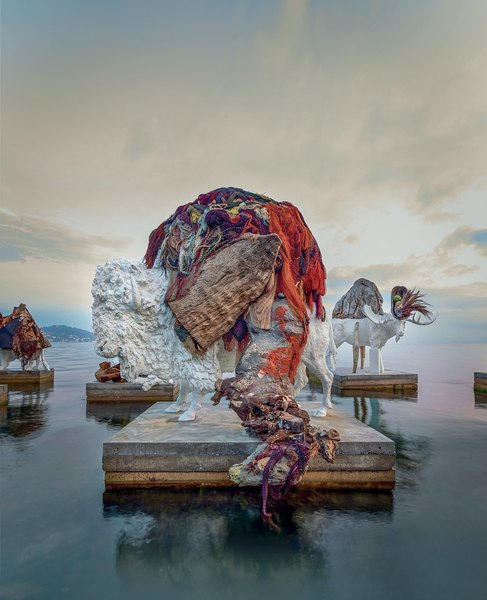
CRVI002068Adrián Villar Rojas - Sculpture on a floating plinth
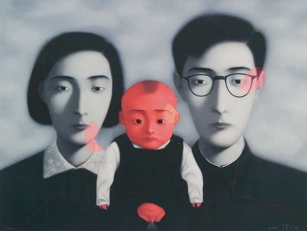
CRVI002019Zhang Xiaogang - Bloodline Series: Big Family Series
2006
2006

CRVI001910Adrian Piper - Catalysis IV
1970
1970

CRVI000010Flying Lotus - Los Angeles
Artwork by Commonwealth · Warp Records
Artwork by Commonwealth · Warp Records

CRVI001988Njideka Akunyili Crosby - Nkem

CRVI000707C.A. Wisely - La Haine
Hand-painted Ghanaian film poster
Hand-painted Ghanaian film poster

CRVI000024The Caretaker - An Empty Bliss Beyond This World
Artwork by Ivan Seal · History Always Favours The Winners · 2011
Artwork by Ivan Seal · History Always Favours The Winners · 2011

CRVI001347unattributed - Tron — concept art, the throne
Maker unidentified · 1982
Maker unidentified · 1982

CRVI002474Johnny Pacheco - Spotlight on Pacheco, Vol. V
1963
1963

CRVI000341Terry Callier - Occasional Rain
Designer unknown · Coder · 1972
Designer unknown · Coder · 1972
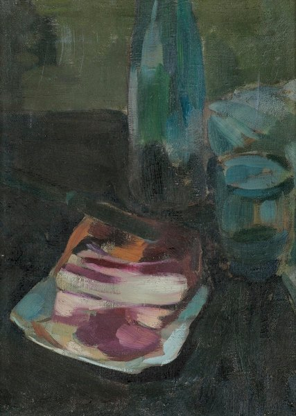
CRVI002113Tadeusz Kantor - Still life

CRVI001183unattributed - Ravine of faces with a luminous figure
Painting
Painting

CRVI000290Portico Quartet - Portico Quartet
Designer unknown · Real World · 2012
Designer unknown · Real World · 2012

CRVI000100Sid Bass - From Another World
Designer unknown · Vik · 1956
Designer unknown · Vik · 1956

CRVI001116Andrew Hill - Judgment!
Designed by Reid Miles, photograph by Francis Wolff · Blue Note BLP 4159 · 1964
Designed by Reid Miles, photograph by Francis Wolff · Blue Note BLP 4159 · 1964